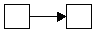
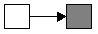
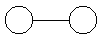

The basic building blocks of a RAD (at least my version of a RAD) are:
|  |
A message or notification. The white receiving box means there is no action to be taken,
this is just a status update. Note that a given user may well elect to omit this sort of
notification by class or by process. For usability's sake, I'll probably toss that in
somehow. |
|  |
Task initiation. I see task initiation in most cases as a sort of message, so the graphical
representation I chose naturally reflects that. We'll see as time goes on how appropriate
this view is. Anyway, the dark box means "something gets done here."
|
|  |
Negotiation. Actually, I haven't used that in any of my diagrams, but it may yet come in
handy. Negotiation refers to a two-way, possibly protracted exchange or collaboration between
two (or more) parties. It's effectively a task which spans roles. So a negotiation task
has all the properties of a regular task, I guess (yes, I'm making this part up as I write
this.) |
|
Decision. Note that the triangles are V-shaped, as in the logical sign for "or" (which comes
from the Latin word "vel", thanks to Douglas Hofstadter for that piece of trivia in my brain.)
A decision point branches off into two different tracks, only one of which is taken. |
|
Join. This joins two tracks together, and tasks after a join are only made active after
both tracks have reached the join. (This will make more sense after you see one. Not in this
scenario, though.) Actually, there should logically be "and" joins as well as "or" joins.
An and-join would wait for both tracks, while the or-join would activate the task as soon
as one notification arrived, and the second notification, should it ever arrive, would simply
show as a message. (Again, I'm thinking while documenting. This is a dangerous practice. Kids,
don't try this at home.) |
OK, that out of the way, let's consider a RAD of the chair purchase process. Here goes. (By
the way, at the moment I'm drawing this with Word art in Word 97 and taking a screen shot
with LView Pro shareware and saving it as a GIF. This is cumbersome. The frightening thing
is, I am a trained professional...)
 My God, that took me two hours to draw and I didn't even label all the arrows. Whew.
My God, that took me two hours to draw and I didn't even label all the arrows. Whew.
To make a long story short, I'll "label" the arrows here. The employee's arrows, in order:
"I want a chair.", "Forget it.", "Your chair has been ordered.", "Here's your chair."
The remaining supervisor's arrow: "Hey, we need a chair over here." The arrows for
purchasing, in order: "Expect an invoice.", "Expect a chair.", "Send us a chair and bill us."
Coming back from the supplier, in order, the chair and the invoice. From Receiving, "The
chair's here, so pay the invoice." From Accounting, the payment to the supplier and "We've
paid the invoice."
And-joins and the importance of waiting to make sure
Note that I've glossed over something here. I represent a message from Receiving to Accounting,
then an invoice later from the supplier, which is then paid. Actually, of course, that
should be an and-join -- the payment should go out only if the invoice has been received and
the notification has come from Receiving that the chair has arrived. But it was too hard to
draw with Word, so I'm just telling you about it. The lesson is that these messages and
events can come in any order and a workflow which assumes a particular order is doomed
to failure. If this were the process actually used, then anybody could invoice Accounting
for something they didn't send, and still get paid. Not a good way to run a business.
Data records
There are a few data objects probably associated with each process instance (each case).
Purchasing will create a purchasing record. There will be a dock receipt record with
shipping information. The supplier will likely respond to the order with a shipping
number for tracking. And accounting may scan the invoice into an imaging document
management system, or the invoice may arrive via EDI, so that would be another record. Ideally
each of these records would be "attached" to the case. Then a full case report could be
made should it be needed; a single screen, for instance, could be checked to get all the
salient information related to this chair purchase.
Detailed play-by-play
OK, so what will precisely happen in this process, and what part of the system does what?
(Note: in the following, I'm naming parts of the system according to the system
design, so in the following you might want to refer to it. I'm seriously not trying to
switch to jargon.) This list assumes the supervisor approves the purchase.
- Employee calls up office furniture purchase request screen, fills in name and article requested, and submits.
- The workflow engine retrieves the current version of the chair purchase process definition from the process
repository and creates an active process record in the active process database. Using the process definition,
it creates a value sheet, writes the values from the submission form into it, and creates the first active task,
which is the supervisor approval. The actual supervisor assigned to the task, in this case, is determined by
querying the organizational database to determine the employee's responsible supervisor. This would no doubt be
an external database query or some other script which was run, as it's probably not a general enough function
to consider a proper part of the workflow system itself.
Once the task is made active, the supervisor is
notified that (s)he has something to do. Depending on the supervisor's own personal settings, this notification
may be an email on the spot, a page sent to a pager or something of that nature, or maybe there is enough of this
kind of thing that the supervisor simply chooses to receive no active notification but rather checks the list
of active tasks from time to time.
- Supervisor sees the active task and calls up a task completion form. The form contains a field for approval code and
displays the information about the process so far (what's requested and by whom.) The supervisor enters the code and
clicks the submit button.
- The submit handler for the form activates the workflow engine with a task ID. Using that task ID, the engine
retrieves the task in question from the active process database, determines the process being updated, and retrieves
the process definition from the process repository. The task is marked "complete" and the next task in the
diagram is activated, which is that Purchasing place the order. The task is placed in the Purchasing queue and the
engine resumes waiting.
- A purchasing clerk sees the task in the queue listing and selects it as the next thing to do.
- The selection handler activates the workflow engine, which marks the task with the user (the purchasing clerk)
actively assigned to the task.
- The purchasing clerk makes the necessary entry in the Purchasing system, calls the chair supplier to order the chair,
and calls up the task completion form. The record number of the purchase appears on the form. The clerk fills it in
and clicks submit.
NOTE that this list of activities is informal. Purchasing could well define a workflow process
for their own use which would be linked to this queue and would be activated automatically. That's their business.
If this is the case, then completion of this subprocess would automatically "pull up the form and submit it." In fact,
we can easily imagine that for some categories of purchase, no human intervention is necessary. Maybe request for
office supplies are automatically submitted to the local Staples online purchase form. In this case, the actor assigned
to the task is a program. The point here is that the designer of the overall chair purchase process doesn't care
how the individual departments handle things. And that's very cool.
- No matter how the task got completed, the workflow engine gets invoked and does the same thing as it always does; it
retrieves the task, gets the process definition, and sees what to do next. After Purchasing signs off, the next thing
is to activate a new task for Accounting and notify the employee and Receiving that the chair has been ordered. Then
it waits.
- The chair arrives at the dock. A Receiving guy finds the corresponding task, pulls up the task completion form, and
enters, say, the condition of the chair or the license plate of the delivery truck or simply the shipping number. And
clicks submit.
- The system notifies the employee that the chair has arrived, and notifies Accounting as well.
- The invoice arrives at Accounting. (Note again that this is a poorly defined process, but I mentioned that above. We'll
play it the way it's written, though.) An Accounting clerk selects the appropriate task from outstanding orders, enters
the invoice number, sends payment and enters the check number or the payment number or whatever makes sense, and clicks
submit.
- The system notifies the Purchasing department that the story has ended on a positive note. The active process is
marked complete.
Summary
So I guess a summary would be in order, or at least a short list of things that resemble
requirements for the system design:
- A task is associated with a role and is assigned to an actor when it's activated.
- Tasks may be dependent on multiple preconditions (both invoice and chair must be
received before we send payment.)
- Data in external databases may be associated with tasks and with cases.
- Other values (i.e. values not stored in external data sources) may also be associated
with cases (the requesting employee, the item requested.)